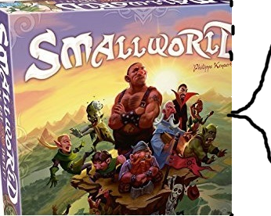
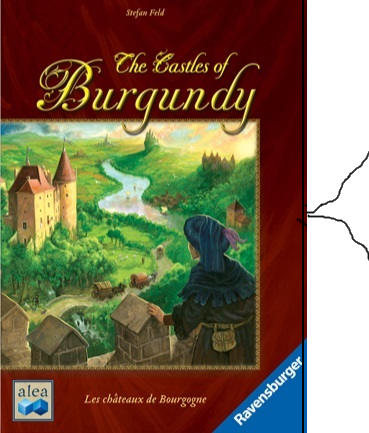
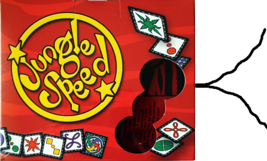
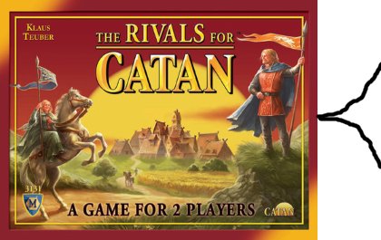
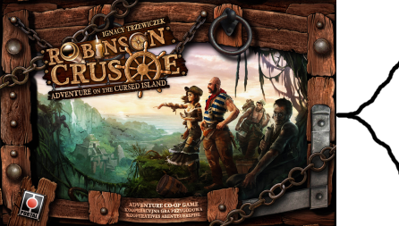
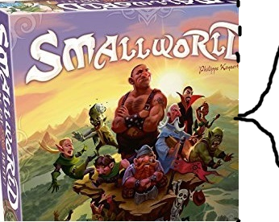
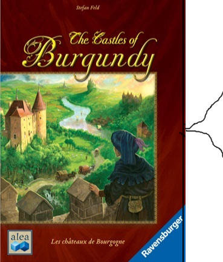
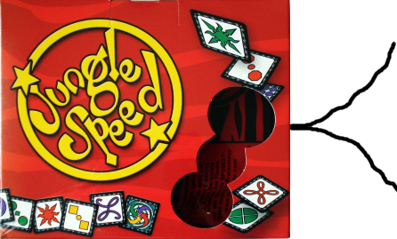
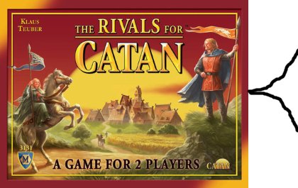
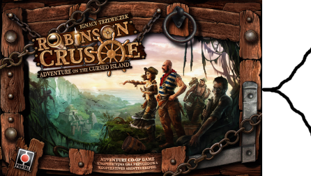

FAQ
¿Por qué preguntas? hay juegos que todos tenemos guardando polvo en un estante
juegos por los que otras personas podrían estar interesadas pero no es fácil concretar
un intercambio. Por eso nace la pecera, para formar una especie de pool donde la gente
pueda cambiar algun juego polvoriento por uno que le guste de la picina.
¿Cómo funciona?
Si ves un juego que te gusta en la pecera tomas uno de tus juegos polvorientos y lo cambias.
La unica restricción es que debe ser de mayor precio, incluso 1 centavo es suficiente.
¿Por qué tiene que ser de mayor precio?
La finalidad principal de la pecera es promover el intercambio, no dejar juegos polvorientos.
Si dejamos que se cambie por cualquier juego la pecera acabara llena de mugrero.
¿Si no tengo un juego más caro, puedo intercambiarlo por varios juegos que sumados sean más?
Claro
¿Qué tal que no me interese ninguno de los juegos?
Puedes dejar uno de tus juegos en la pecera y si luego alguno de los juegos que entre
a la pecera te llame la atención puedes tomarlo, mismas reglas aplican.
¿Cuanto dinero estas ganando con esto?
Probablemente nada, no estoy aquí para ganar dinero, con suerte podre jugar muchos juegos
que a otras personas no les parezcan interesantes.
¿Por qué usar el precio de amazon?
Es el lugar donde he podido encontrar la mayor cantidad de precios, es fácil de accesar
y verificar y todos pueden verlo.
¿Algo más que debamos saber?
Not really, god speed my son.
 








